Longing for the Spring Breeze望春風
You run a record shop in Taipei during the martial law years. Each customer remembers only fragments of a song. With your ears and clues, you find the record and sell it to them.
Gameplay videoSix frames from the 56-second video
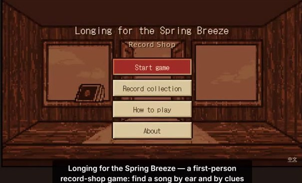
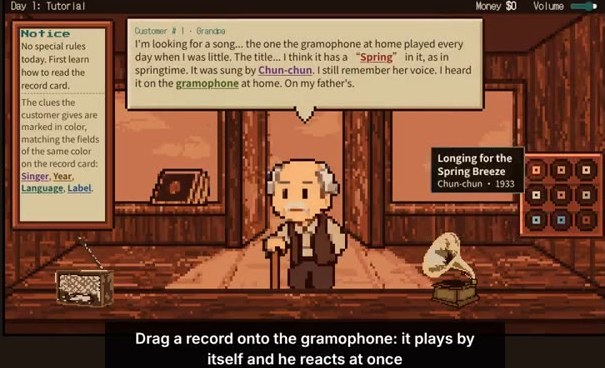
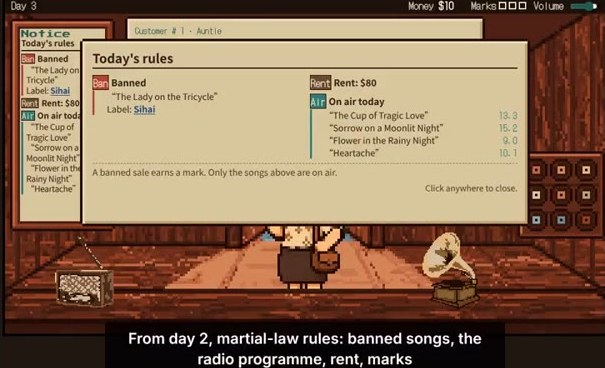
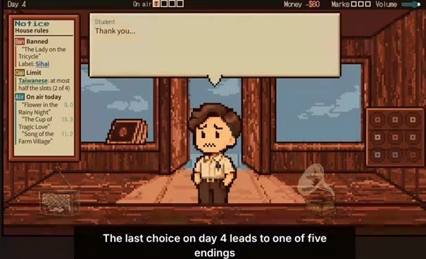
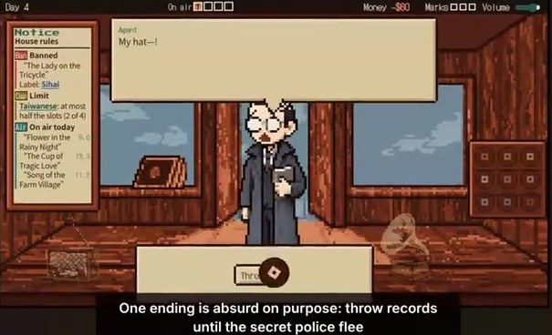
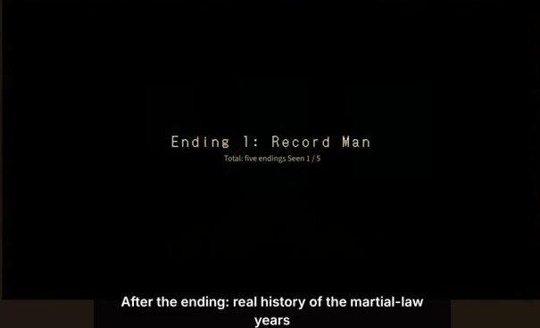
The gameGame page
1. Background
Longing for the Spring Breeze is a 3-week solo project. It is a first-person historical shopkeeper sim set in a Taiwanese record shop between 1933 and 1987. Players take on the role of a shopkeeper who listens to each customer's request to sell the right record. More rules arrive progressively. The rules are based on real regulations of that era, so players learn the history by running the shop.
2. Gameplay
A. Find the song. Each customer remembers fragments of a song. Players find the record, check it against what he said, and sell it, while rent and rules turn every sale into a choice.
- The customer tells clues to the players. They are highlighted with colours.
- Find the records on the right and play the music to the customers.
- Sell the song to your customers.
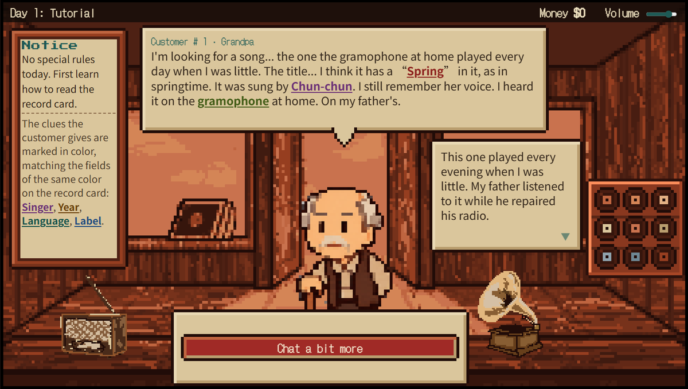
B. Martial law regulations. Regulations about selling certain songs or playing songs on the radio are added throughout the gameplay. Violations result in fines or ending the game.
| Day 2 | Day 3 | Day 4 | |
|---|---|---|---|
| Banned records, fines | on | on | on |
| Radio programme | on | on | |
| Taiwanese-song cap | on |
These rules are drawn from real martial law-era regulations. The game lets the players feel how much these restrictions shaped everyday life, when many people could no longer listen to the songs they loved.
3. Story
A. Characters. Customers share memories and stories about the song, and players can see the effects of martial law in their conversations.
 GrandpaWants his father's favourite songs
GrandpaWants his father's favourite songsThe student represents the social activists of that time, who were suppressed, imprisoned or killed by the authorities.
B. Narrative.
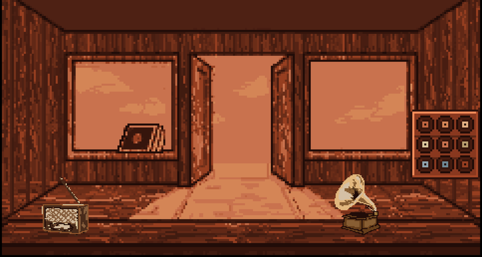

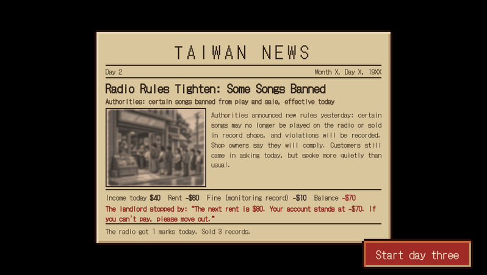
C. Ending. On the last day, the student asks you to hide him, and everything you did earlier decides which of five endings you reach. After each ending, the music carries into a short history section that connects the story to what really happened.


The designDesign page
This part shows the iteration from an interactive experience into a game.
1. Challenges: Version 1
Players match different versions of the song "Longing for the Spring Breeze" with different devices, such as a gramophone, a radio and a cassette, that represent different eras of Taiwanese history. Players learn about each era after they arrange the devices on the Taiwanese history timeline.

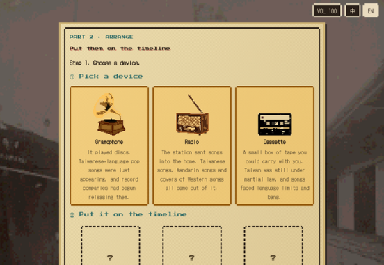
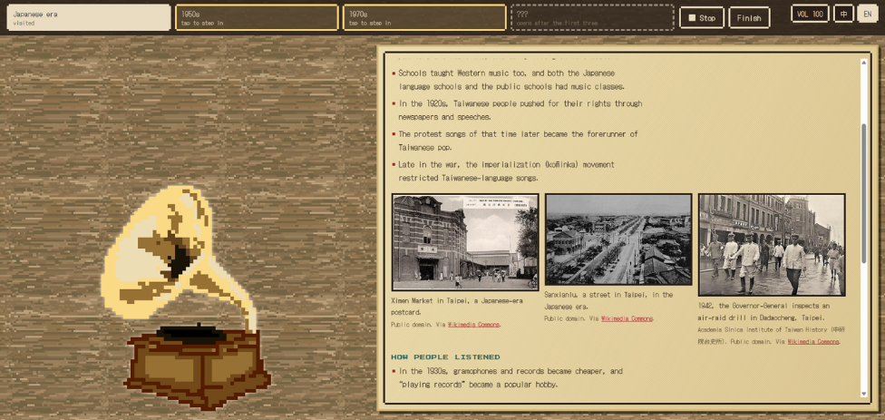
Upsides
The pixel style fits the retro tone. The history came through: testers called it serious, moving and solid.
Downsides, concept
- It felt like an interactive display in a museum.
- The experience felt short.
- Testers did not call it fun or interesting.
Downsides, UX
- Unclear guidance (timeline).
- While a song played, players clicked the screen or elsewhere.
- Choosing a device was not intuitive.
Keep the pixel style and the weight of the history. Change the form of play and the guidance.
2. Design decisions: Version 2
Decision 1: Game loop, the record shop. (It felt like an interactive display in a museum.) Added a game loop of "selling records" so players can listen to different Taiwanese music and learn information about the records in the process.
Decision 2: Elements that change through the day. (A short experience, wasn't interesting.) Players feel how everyday life was affected as martial law tightened.
- Each day stands for a stage of martial law.
- The rules come from real regulations and arrive one at a time: banned records on day 2, radio programmes on day 3, a cap on Taiwanese-language songs on day 4.
- Money, rent and marks give each rule a cost.
- Customers' conversations change from day to day.
Decision 3: Ending and history text. (Some players found the endings heavy.) A fictional happy ending set against what really happened, so players see that real history was not resolved so lightly.
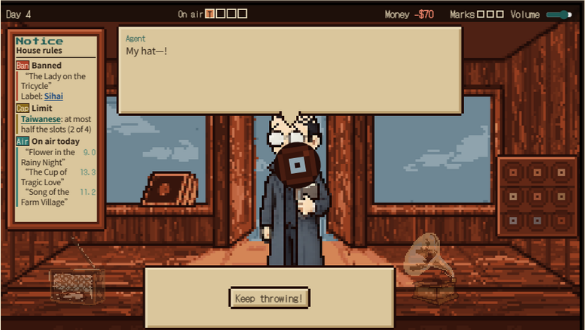
- Ending 1 is the only unrealistic ending: the player drives off the secret-police agent by throwing records.
- The other four endings stay heavy.
- History pages follow, describing what happened in Taiwan under martial law (1949 to 1987), with sources.
UI improvements
- Radio: left and right buttons with a frequency scale, replacing the round knob.
- Gramophone: a record plays when dropped, with no needle step.
- Interface: larger type and buttons, and a notice board in labelled sections.

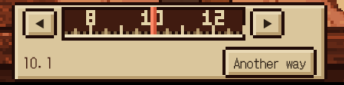


3. Evaluation: player feedback
Version 1
serioussolidFelt like an interactive display in a museum, not a game.
Version 2
serioussolidFunInterestingPlayers called it a game. Players liked the art. Ending 1 made players laugh.